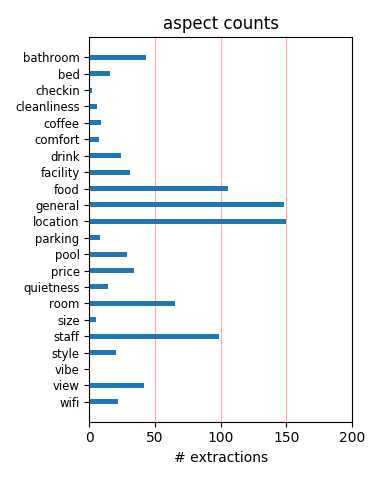
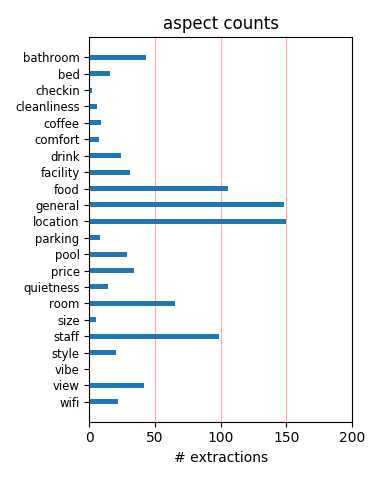

We had a good stay at this hotel, which is located in a very nice area. We weren't blown away by it, but it did have a nice outdoor pool. Check out Sentosa island--I plan to stay there upon returning to Singapore.
The rooms are OK, just as you would expect from a 5* Marriott venue, but I wouldn't pay the extra S$$$ just to get this location. The restaurants are again...just average. There are far better hotels in Singapore even with more convenient rates..
currently undergoing renovations so theres a distinct smell of glue or varnish in the lobby and elevators, but they put u in the new rooms with a gift of a plush toy dragon on the bed so u cant complain, especially as everything is new and so, clean. service is great as always.
Second visit to this hotel. Unfortunately we did experience some disruption due to the refurbishment but the overall service was very good. It's located right in the centre - the MRT station is right outside the door. Look forward to visiting when the hotel has completed its re-fit.
Marriott is another of my favourite hotels. On my business visits to Singapore I stay in Marriott, centrally located, opposite the Orchard MRT, its surrounded by shopping malls, movie theatres and restaurants. It provides easy access to the shopping malls & other attractions in the area.
Superb room with great facilities, emaculately clean and I was on the 30th floor, so I had a good view. I used the hotel gym and executive lounge a few times which were brilliant. But the breakfast was probably the best part, everything you could ever want, make sure you go there hungry!
Thank you Marriott for all the benefits you give me for being a rewards member...i love hanging out at the executive lounge...the location of the hotel doesn't get better than this...breakfast buffet is great coupled with warm hospitality...and the little gifts you find in your room occasionally, make your day :)
Marriott Singapore is a comfortable Hotel located at the heart of Ochard Road. There is no question to the location and the marriott brand-- they are definitely above average.However, I felt the regular rooms+Bathroom are slightly outdated and showing in needs of a refurbishment (vs the rooms at Hilton Singapore)
Regretfully the Marriott is my Company's chosen business hotel and given the choice I would not stay there. The location is great, doubt any better in Singapore, the reception staff friendly but that is where the accolades stop. The rest is dire I'm afraid. This is one hotel desperately crying out for an upgrade, major upgrade.
Stayed at Marriott for 3 night in September 2011. Did not get to enjoy any of hotel facilities, so not much to comment about breakfast, swimming pool or gym. Location: Probably best in Singapore Room: Very clean but little outdated Service: Not much to comment Price: Very expensive, there are better hotels at much cheaper price.
Great location if you want to be in the thick of it. It's right on Orchard rd so is perfect for shopping. The MRT station is directly underneath which couldn't be more convenient for exploring the city. It is a very busy hotel and the lobby area is always packed so if you're looking for a quite getaway hotel this wouldn't be a good choice.
Its luxury personified. Right from the location to the in-room comfort. The breakfast spread is good, lounge facilities are excellent. The sleep quality was the most striking feature on this visit..The bed just lets your worn out muscles sink in..special is an understatement! Do want to visit again..just to experience the sleep atleast :-)
Marriott Singapore is an excellent hotel for short or long business trip. Location is great since most of the restaurants and shopping is walking distance. The staff is excellent,and I would recommend to upgrade to executive level to use the executive lounge. Hotel is very flexible on late checkout for Gold status or executive level customers.
We loved this hotel. It was the best Marriott we stayed at that wasn't a JW. The location is probably the best location in all of Singapore. The dim sum bar was awesome. The pool was the best urban hotel pool we've ever had. We wrote more details about it on our blog: http://worldfamilytravellers.blogspot.com/2011/12/hotel-review-singapore-marriott-hotel.html
Hotel has a superb location, with wonderful access to everything in Singapore, including the subway, but overall nothing special and just your typical Marriott hotel, besides the fact everything was quite expensive. Enjoyed our stay but probably would choose another property if we came back to Singapore. We did enjoy the pool area, room service, and the location.
The hotel is located at great location. Everything is very reachable but you dont feel that problem in singapore. Compared to other marriott hotels, singapore Marriot might appear small but space is really a big constraint in Singapore. So, this is probably the best hotel in Singapore. The staff is courteous; the breakfast is amazing. the stay has been as comfortable as possible.
I fell in love with this hotel the minute I walked in! It's so beautiful. It also has great architecture. It has all the facilities and you will not get bored at all! It is also located in a fancy street with so much to do. There are so many places to eat around the area. Extremely lively area and such good location. You can't get anything better than this. I'll be back for sure!!
Old hotel,now is under construction also sometimes little noisy. The location is excellnet,when you want shopping. But the best thing in this hotel is the breakfast! I have never seen so excellnet breakfast buffet in my life-everything you want is there-also steaks, seafood, for children ice cream, many kinds of bakery products, fruit and vegetable, they also make for you espresso coffee or capuccino......
We stayed here for 6 nights and although our trip wasn't really leisure we did thouroughly enjoy the hotel. The rooms are very comfortable and clean. The service is amazing. The pool is fantastic. The fitness center is being renovated but the temporary area was still great! The hotel is in a great location in the middle of all the shopping on Orchard and right above an MRT station that can get you anywhere.
This hotel's major plus point is that it is smack right in the middle of Orchard Road and extremely convenient. It is next to Tangs Departmental store and across the Road from the new ION shopping center and Borders Bookshop. All of these buildings can be reached easily through the underpass without having to cross the road. Hotel facilities and rooms are what you can expect from a typical 5 star hotel like Marriott.
I stayed in this hotel twice because I did not have any other options available. On both occassions this hotel failed to impress me. Rooms are like pegion holes, very small and uncomfortable. Though this hotel is situated on Orchard Road which is one of the best locations in Singapore, the rooms do not have good view. Staff is also not warm and hospitable. Not a very pleasant stay. On the whole my experience is below average.
This is your bed and breakfast if you like to SHOP. We had a room on upper floor, however, they are doing some remodel work, so not as high as normal due to construction. Great Marriott. Staff was smart, friendly, accomidating and well trained. Lounge was very good. We enjoyed the "American Food" night during our stay with all of our typical favorites. Great Location for SHOPPING, "Main & Main". We had nice service and enjoyed our visit here.
Located on Orchard Road this would be the place to drop your heavy bags before you set out again to shop thru Singapores Best Sopping destination. I stayed here after the Conrad in the Marina Area so it was a hard act to compare with and since possibly because it feels like a London Hotel room after that but it has a great lobby and breakfast restaurant. Most of all i like walking off onto the street and wandering around to refuel when tired !
Bang on the heart of Orchard road, the location could not have been more central. Close to the best restaurants and shopping the Singapore Marriott is the place to stay if you can afford it. I think it is overpriced but the convenience outweighs the cost. Rooms have a very nice view of the city and because of the design of the hotel each room has 2 large window walls - floor to ceiling (almost). The health club is nice and compact. A must stay.
Well, the hotel has all one can ask for. Very good standards maintained. Happened to go there in evening, it just looked so beautiful, you could say it was really another viewing site. Excellent cuisine. Ofcourse they did not provide all types of food stuff, but, whatever they provided was superb. The day ended good there! The staff is really helpful. My little brother was asleep, so, they provided him a small bed till we were finished with eating!
I had to have some medical tests done and the Marriott on Orchard Rd was the best location. 5 min walk to Mt. Elizabeth Center and 2 min walk to Orchard Rd shopping. Pool and gym were nice, room was OK in size (a little cramped with Daughter's rollaway bed in the room) but the service and executive lounge were very nice. Fantastic Breakfast Buffet in the morning with fresh honeycomb and choose your own freshly squeezed fruit juice/smoothie station. Wow.
The Marriott in Singapore is located in one of the best locations - right on Orchard Road in the heart of the shopping area. The lobby is quite nice and there are several decent restaurants. The rooms at the Marriott are extremely small (for Singapore) and are not that well lit. The gym is somewhat small as well. I would recommend the Shangri-La (on Orange Grove Road) which also have a great location but is much nicer and also has an Asian/cultural feel.
do not ever stay this hotel. its my first time in marriot singapore not first time in marriot though. other marriot is better. singapore marriot they just happily charges big amount to you for every single broken thing and they claim its you that broke it. and you have no right to defences yourself even if its not your fault. the buffet is always empty, the bathroom is not so clean and the shower is broke. the room is small. no table for your luggage.and very expensive
Okay, so they may not have the teppenyaki grill in the Exec Lounge that Bangkok has....but THIS is the best Marriott I've ever stayed in. The pool is beautiful; fantastic. Excellent and timely customer service. 24 hour business center for your needs......and of course, location, location, location. You are amidst the bustle that is Singapore. I've stayed in a hundred Marriotts but this one blew my mind. Keep on doing whatever you guys are doing; I was greatly impressed.
For a number of years now, I have always stayed in this hotel whenever I am in Singapore for a holiday. Their quality of service is superb as always, especially Ali who always took care of my car and Rudy and Shariff who assisted me with my 90 years old handicap mum when I was there just last week. An excellent hotel and friendly staff as well with great facilites for handicap visitors. Wonderful location, the MRT is just outside the doorstep, with Tangs next door and the famous Orchard Road just steps away.
My first time staying at a Marriott and I have to admit I was impressed. Location is great with Orchard road right there. Executive room is a real must if you're visiting for business and the club lounge is excellent. I couldn't fault the room or the service. The Marriott isn't new and it certainly has benefited from the renovations which understandably may have annoyed some but its a minor issue really. Its a really excellent hotel with a location that makes it an even more attractive choice for a place to stay.
Stayed here in Oct 2010 for a 1 night stopover in Singapore whilst on-route to Mumbai. The room (suite) was just amazing, the bathroom alone was bigger than most average hotel rooms! Was a great location, able to walk nearby to major shopping centres, went on a city sights tour booked through the tours desk, well worth it for $35 SGD air conditioned bus all around the city and finishes off in the orchid gardens. The buffett breakfast in the exec lounge was good, large selection of different food and good view! Would definitely stay here again!
Stayed at the Marriott Orchard recently and had a great time. The hotel is central to a shopping haven. Rooms are extremely comfortable. Was a weekend holiday to the universal studios . My two kids age 7 and 9 loved the room and we slept comfortably on the king sized bed. The swimming pool has a restaurant next to it, clean and great place for the children. The service is top notch, all requests over the phone were made within 3-5 minutes. The reception and the attendant were all helpful. Internet is free , all you gotto do is sign up as a Marriott member.
When we first went to SIngapore, we stayed in some other hotel but then saw Marriott and it looked grand and was right on Orchard Street. We planned to stay here in the next trip. And we did!!! but completely regretted the decision. The hotel undoubtedly had a great location as it is bang opposite Ion Mall and the clubs and restaurants. However, the hotel service was really bad. Very slow service, the rooms were very small and bad decoration and old and stuffy. The breakfast was average. and all this wid an exorbitant rate made the stay here a disappointment
This place rocks! Location is perfect. This was my second visit in 4 months, but never seemed out of place. They made every effort to ensure I had a pleasant stay..complimentary moon cakes included :-). The breakfast and evening snack (part of my Platinum package) is always quite filling. They did go the extra mile to ensure I wasnt charged extra due to the F1 race weekend rush. Incidently every other hotel in town had hiked thier rates for this wknd. I will definately visit again and recommend to everyone who wishes to enjoy comfort...in true Marriott style!
On the crossing of Orchard and Scott Road you can find the Marriott. While this location is a bit out of the business center (CBD), you can easily hop on the MRT (subway) to get to the center. Of course you have easy access to the shopping at Orchard road. Recently the rooms have been remodeled. The new lay-out for the bath room and the bed room are a big improvement but the overall dimensions of the room remain limited. What makes this Marriott so special? The hospitality of the hotel staff and the outstanding food! A return to the Singapore Marriott feels like a home coming.
I would agree with what most people have said about this hotel. It's in a great location, nice staff, nice lobby - all of which you would expect from a decent hotel in Singapore. Once thing to be wary of is since it is an older hotel, some of the rooms have connecting doors, including the one I stayed in. These connecting doors offer little noise insulation from the neighbouring room and I hardly slept the second night, due to a very noisy neighbour. If it hadn't been for that, I would have really enjoyed my stay. MAKE SURE YOU GET A ROOM WITH NO CONNECTING DOOR!!! You have been warned.
Situated on the corner of Orchard and Scotts Road, the Marriot is at a great location in Singapore, especially if one has a few days to shop and enjoy the city. It's 3 mins from the closest MRT Train station which could take you to other locations for shopping. Taxis were plentiful and necessary if you're visiting the sites which are further away from the city center. Service was efficient and up to expected standards. As was the breakfast and housekeeping. One regret was not trying out the pool as it looked fantastic from our room. Overall, would recommend this hotel for an enjoyable stay in Singapore.
My friend and I stayed at the Marriott because of the location. I am glad we chose this property as it was very good. Caught the MRT from the airport to Orchard station and when we got out, the hotel was just outside which was excellent. Very cheap on the subway too, unlike Sydney (where you pay extra money for substandard trains not designed for luggage/airport users). Staff are excellent and are on the ball. The rooms are modern and nice. Very comfortable 'Revive' bedding. Plush pillowtop beds. When I requested the hotel, I had asked for high floor and extra feather pillows. Both requests given. Nice touch.
On Orchard road so in the main shopping area. Great service- staff very welcoming and remember you by name. Rooms modern and well furnished. basic coffee making facils- wld have welcomed nespresso machine but only thing I can find to fault this hotel. Exec lounge is brilliant- superb food and cocktail hour, fab breakfast up there and cakes during the day if you can get in...only slight problem is everyone else seems to know about this gem so very busy and you struggle to find a table and seats... If looking for a modern hotel- this is well worth staying in- for a more cultural experience and higher price- try raffles.
Stayed at the Singapore Marriott for 3 nights at the beginning of October. Have to say I have no complaints at all. I booked this stay using my reward points so didnt cost me a penny. Also got access to the exec lounge with free breakfast, drinks between 5.30pm and 7.30pm and desserts until 9.30pm. The lounge does get a little full understandably when the free drinks are available. However the staff in there are great and really look after you. The room is of a normal Marriott standard which is really good and clean. Great views from our room on the 27th floor. Would I stay here again? Most definately. highly recomended.
We always stay at this hotel when in Singapore. They have recently undergone renovations and we have since stayed in both a regular room and a room they called a studio. Both rooms have been nicely updated with modern furniture and clean lines. The bathroom is chic with a great huge shower. There is no longer a tub, but I loved the spacious shower. The room they called a studio was actually just a slightly larger room with a small partition built to separate a tiny desk from the bed area. The plan in the new rooms maximizes the space better than the old rooms did. Nice job. The renovations are not quite done, but so far so good.
I visited this Hotel during my last stay in Singapore early March 2012 and overall I can say that I had a very nice stay. The lobby is still under renovation thus it gives a bit of inconvenience to the guest and visitors. The rooms I stayed in, probably has been just renovated and still a bit smelly of fresh paint or cement which was not really pleasant. The rest of the facilities are quite nice with an excellent buffet restaurant! If you must stay in Orchard Area that the Hotel for you!! I would like also to express my gratitude to the Concierge Team for having helped me to get back my HP which I have lost in a cab!! Great Job Guys!
stayed there for a 1 day stopover. Therefore, the location was perfect: easy to find and very easy to reach from the airport because it is just on top of a subway station. Checkin was efficient and professional. Before I explored the city , I relaxed at the pool for a while, which was probably the most memorable part of the hotel for me: Very nice outdoor pool, elegant resting-area and bar facilities. Only the noise from the busy streets could be heard at the pool area. (but not in the room.) Well then again due to it's location, it is a good starting point to explore the city ... Overall, I would love stay there again for the next stopover
Cannot say enough nice things about the Marriott Singapore. It is located in the middle of the 'upscale' district so if you like shopping for luxury items - it's perfect. Staff are ultra friendly and helpful. Management is caring and responsive. Rooms are a little small but exceptionally well appointed. I am a Marriott Platinum member so I used the executive lounge - and it is simply the best lounge I have ever visited. There is a wide variety of snacks, food, drinks, fruit, etc. and a happy hour from 5:30-7:30pm. Staff pamper you beyond any expectation. If you visit the lounge, get to know the chief concierge Rachel. She'll spoil you rotten.
Stayed 2 nights in this hotel. I had the room right next to the pool door exit. A little noisy to say the least. Rooms were nice, but nothing special. Some but not all the rooms were updated (nice TVs etc) not mine....Construction in the area made it a little more noisy. Drinks at the hotel bar were horrible. Can't think of the name of the place, but it's around the corner from the elevators. I like being downtown so I could walk to all the places I wanted to go. Check your bill. I was charged for mini bar purchases that I didn't make…….and was billed again a week later for additional purchases. If you get a great room rate, it would be worth it.
While I am a Platinum Elite Member of Marriott's program, this was my first trip to Singapore and this property. I was very pleased with the hotel and its staff. As an Elite member, I was provided access to the Executive Lounge. The full Breakfast in the morning and excellent evenings snacks and cocktails were some of the very best that I have experienced at a Marriott Property. The staff was very helpful and refused any gratuity, saying it was part of their mission to assist their guests. As for my room, while small in size, it was extremely comfortable with new furnishings. The bed was one of the new "Comfort Beds" that provided for excellent night's sleep.
We stayed in this hotel for two nights. Upon arrival it was noted that I was a Marriott rewards holder (although only a basic points one) and was offered an upgrade to a top floor room with VIP lounge access for S$120.00 per night. I accepted this offer - and what a great decision. The room had been upgraded earlier this year so everything was brand new and the bed was huge. Breakfast time involved the head chef going round and rejecting some items as they were not up to his standard (they looked fine to us). We went back to this hotel just for a meal again - utterly amazing. Would stay here for much longer on our next visit and cut our time in other hotels down.
This is where I try to stay each time I go to Singapore. I have stayed at The Sheraton, Hilton, Conrad, and 2 other regional hotel chains that slip my mind. I like this place because to rooms are very comfortable, the buffet is very good, and the location is perfect. The MRT is right in front of the entrance. Lucky Plaza is steps away along with other shopping malls and dining. I never need a taxi after working in Singapore when I stay here. I can relax at the hotel or head out to explore Orchard Rd. The pool is nice and the staff is top notch. Did I mention the nightclub that is very lively on the weekend? Do yourself a favor and stay here when working or visitiing Singapore. They will take good care of you.
After reading quite a few lukewarm reviews on this site, I checked into the hotel with trepidation. But I found the negative reviews completely unjustified. Although I arrived at 9:30 AM, they already had a room for me, with great view of Orchard Road. Contrary to other reviews I've seen on this site, the room felt new and clean. It wasn't an enormous room, but it was big enough to move around in and the bed, furniture, etc. were all comfortable and spotless. It had a great location, close to the Newton MRT stop and at the end of Orchard Rd. I did use the gym and thought it was one of the best hotel gyms I've seen in awhile with brand-new equipment, fresh towels and water, etc. Would definitely stay here again.
The Marriott Singapore in Orchard rd is a wonderful luxury hotel. The service I experienced on my second visit to this hotel was 100% better than my previous visit, which just goes to show that it is still up to the individual you end up dealing with. The hotel has all the creature comforts and is very well located. The restaurants are not wonderful which is a gap in a hotel on this level. The basic rooms are very good but as soon as you begin to upgrade, the quality becomes markedly better, of course for a markedly improved price. I cannot find fault with anything this hotel offers and in fact I would recommend it, but for the price, they could pay greater attention to detail and improve some of the smaller things.
The Singapore Marriott is not a new experience for me or my family. Superbly located in the heart of Singapore's busy bustling Orchard Road and surrounded by shopping malls of every conceivable size, selling the top brands in the world the hotel is a pleasure to stay in. Friendly and attentive staff, a surprise lounge in the entrance lobby that offers a mouth watering array of cakes & pastries are some fo the things that make this hotel a delight to stay in. However, the popular bar/nightclub in the basement called Bar One is the real treat. Playing live music ranging from local talent to the popular songs it is a fun and rambunctious place where one can let their hair down and enjoy a late night if you have the energy.
I have now stayed at the Marriott twice this year and not sure what has happended between June and September, but one problem after another. I booked to return to the Marriott simply because the accomendation and service previously had been first class. Now I arrived to find that had no knowledge of my booking. After some time they find me a room, right opposite the building site with workman quite happy to look into your room! The grouting in the bathroom was very grubby and part of the marble was chipped. I asked for a new room and boy what a performance that was. You think I had asked for the presidential suite. In view of their charges, this really is not good enough and with so many good hotels to choose from, I will not be returning.
Stayed at the Marriot early last year for a quick break. It is quite central to everything from shopping to restaurants and is smack on Orchard. Arrived at noon and had to wait for a room until 4 PM. Quite upset and threatened management that i would shower at the lobby fountains. Eventually got a room near the pool and near the construction. Staff were understanding and tried their best to appease me and even gave me a Marriot Card. I guess when you chose such a centrally located and really busy hotel you have to take the consequence of not having your room ready when you arrive. Restaurants were excellent and the rest of the stay went without a hitch. It is still less chaotic than Marina Bay which felt like i was in a mall and not a hotel.
Great location - at the junction of Scotts Rd and Orchard Rd, right in the heart of the shopping district with several major shopping centres just minutes walk away. The hotel itself is getting old (constructed I think in the early 90s) but it is ageing gracefully (although the lobby is showing its age especially in terms of design). My room was spacious and was of an acceptable standard - the only real let down was that although everything in the bathroom worked well (good water pressure for the shower, etc), it had clearly never been refurbished over the years. Breakfast in the coffee shop (which was included in my room rate) was fine - good selection of both Western and Asian breakfast items. Check-in was smooth and staff were generally friendly and helpful.
I stayed at this hotel using Marriott Points. This was the last stop off of a 35 day cruise. Check was great and so was the service. What really bugged me was the food quality of the hotel. Rooms -- rooms at this hotel have been always small. Hotel was under renovation and it was very noisy. The lounge was no excuse. First off it was crowded -- you could not get a seat (not acceptable). Third the food was bad and the dessert bar was none. The buffet restaurant is a local favorite. Maybe because for one price there is lobster, oysters and prawns. None of this was eatable. The oysters were definitely not fresh and that slimy taste. Cost per person on the buffet is $75 USD. A rip-off and guests should stay away and eat out. We ere tired (no excuse) and decided to eat-in.
Location is the Key factor for this Hotel. You can go almost anywhere without getting wet because there is tunnel that connect this hotel to the Orchard MRT Station and major shopping centers (Tang's, Isetan, Shaw House, Ion Orchard, Wheelock Place, etc.) We booked 2 deluxe rooms and never mentioned about early check-in, but when we came around 10:30am, they give us the rooms without any hassle. The breakfast at the Marriott Cafe is wonderful. The taste and the variety is all perfect. And you could have your breakfast by sitting-in outside with the view of people passing-by the sidewalk on the corner of Orchard and Scotts Road. Got free-wifi connection as the Marriott Rewards member but never use this facility. Room is nice and modern with the partial view of Ion Orchard.
We stayed in the hotel during New Years, the main reason for the hotel selection was the location. You come out of the hotel and right opposite is Ion Shopping mall (a heaven for shoppers), and just outside is the Orchard MRT (Metro station) and the other stores and malls are just next to the hotel. Awesome location, right in the center of the cit and on Orchard Road. However, the service of the hotel was really slow. They did provide whatver required, but took ages to come and that also after several reminders sometimes. The hotel inetriors and rooms are very ok, like a 3-star. The hotel is quite dated and hence not a great place to stay, esp considering the price. Its very expensive. I would not refer staying there. Its like very expensive with bad interiors and poor service
Honestly, I probably wouldn't have picked this hotel if I hadn't been attending an event there, since I'm not much of a shopper and its main attraction is being right in the middle of the city's main shopping district. That said, I had a comfortable stay: our rooms were small, but looked recently refurbished, quiet and clean, and the lobby was a very calming contrast to the bustle outside. You could hardly be closer to the subway station, which is good, because while the food courts in the malls around the hotel have franchise versions of some of the popular Singapore hawker food, for the real experience you will have to get out of Orchard Rd. The biggest annoyance is that for all you spend on the room, you still have to shell out for any sort of in room wifi - a modern necessity.
It is really a Royal experience staying in this Hotel. Very good location in the Orchard Road, well connected with all the areas. Taxis will be waiting in the entrance so no need to wait. Lobby is really a big one and really a nice one. Staffs are really carring and effective. when I have personally requested them to maintain the temprature at around 18 - 20 C, they have taken extra mesures to make sure that it is taken care. Being from hot country that really mattered lot to me. The food is really fantastic. Morning buffet is treat to your senses. It is very close to big malls and you will get everything close to you. They have curreny conversion centre near the front gate which is really nice to have if you miss to convert the currency in Airport. Overall Royal value for the money.
We have been visting this hotel over the past 15 years: we were loyal customers. This time we find the rooms nicely renovated: up-to-date and modernized, with walkin shower rooms in lieu of bath tubs, large flat-screen TV. Generally the guest rooms are much improved. But there is a lingering, terrible smell from the plumbing or drains in the bathroom that the staff could not get rid of despite of several attempts. It made our one-week stay most unpleasant. Admittedly the staff did offer a change of room: but we had a lot of luggage which would make moving quite a chore. And everyday we hoped they would solve the problem. Unfortunately the terrible stinking smell persisted. As well we found the food quality has certainly deteriorated. On our next trip, we may hesitate to stay here again
I have stayed there for 3 nights when arrive I aked the front disck to get a good room for me and he insures that he will , when I arrive to the room I find out that the room it smells like rotten cheese and they was installed a blower to move the air from the room to out side , I asked to change the room but he say its fully booked , after that I wait for some time but I cant stay in the room any more so I call him again asking for changing the room , he accept and give me another room but there is was a noise in the roof I complain but they say they are sorry as they are repairing some thing , again I just get what I get and thats it . if I go back again to this hotel because it just because I trust marriott brand but I will make sure that I see the room firest and make sure that the breakfast and internet is included
It was a disappointing visit to the High Tea in Marriot Cafe on Saturday afternoon. As the main cafe is undergoing renovation, the high tea is currently located at 2nd level. Foods were very disappointing, From laksa to desserts.........I had never been so disapppinting as I do frequent the cafe (main lobby). I would said that with the price that I am paying, it is not worth at all. Hot coffee was serve cold and foods was not hot at all. But, something that impressed me was the supervisor, a lady, we made some complaints and she was very sweet and kind. She took our comments and she said that she will discuss with her chefs and staff. iI do hope that the cafe will take our comments seriously as we do depend on tourists and I do not want to disappoint them that this is how our foods tasted after we claim that we are a food paradise.
I have stayed at Marriott for over 1 month and cannot praise enough the hotel. Hotel has the perfect location to explore the city. Right in the centre of the city you can easily reach any place in the city by underground or taxi. The rooms are spacious and cleanliness all around the hotel. If you looking for a chic place this might be not the right choice, but location and overall service are excellent. Staff has been always friendly and efficient. I would definitely recommend anybody to pay the upgrade to executive room as the access to executive lounge its worth it. Located on one of top floors, it has amazing view and nice breakfast buffet and evening canapes are included. The outdoor cafe has great menu and is great spot to have a drink in the evening and observe the buzz around. I definitely would return back if looking for hotel in Singapore.
This was my 6th trip to Singapore, each time I stay at a different hotel. This time was the Marriott and will be hard pressed to want to stay else where after enjoying our stay. I stay in Singapore on route else where and stop off for a few days, as I love to shop I prefer a hotel in this area, the Marriott was close to the shops and MRT. Only ate breakfast in the hotel as we were taken out by our Singaporean friends for evening meals, the breakfast was good and we could chose to eat outside. The room was clean and TV had decent channels, it was a good size, our room over looked the pool, no complaints about noise. We went down to the pool twice and did find it hard to get a lounge, could do with the pool attendent checking on loungers more often. For the vibe, friendliness and location I will definately stay next time if I can get the same great deal.
Went for a family lunch on Sunday. Having been to the hotel for their Sunday brunch before, I was looking forward to a delicious meal. Sadly what I got was very bad quality food, restrain choice and a bad stomach. We pretty much all suffered from diarrhoea straight after the meal. The lobster had clearly been defrosted as the meat looked intensely red and was VERY chewy. The sauces that accompanied the Crustacea were not refrigerated. The dim sum tasted so old and straight from the freezer. Duck pancakes felt as they had been made the day before...etc The more I think about it , the more I can see where I could have been infected with a staphylococcus. It is a disgrace for a hotel of this standard to serve this kind of reheated-old food. The bill was not cheap and I expected a much better food hygiene standard. First time this happened to me in Singapore.
I was lucky to get the Marriott Orchard for 120 USD on Priceline earlier this year. For singapore this is a pretty reasonable price. The room is quite large, bed was comfortable, bathroom was in reasonable condition. Checkin and out went smoothly. Perfect location for shopping and gettign around on the MRT. I would say the hotel is not up to the usual Marriott standards. Things seem a bit worn, but everything worked so I was pretty happy. I was on the 9th floor facing Orchard Rd and on the Fri / Sat nights you could hear a lot of music from various advertising screens. It wasn't really that loud that you couldn't sleep. I was out the 2 nights anyways so didn't affect me. The pool is great to lounge around after a hard days walking. For the price I paid I was pretty happy with everything. If you were paying the more 200+ I think then you'd be entitled to feel a bit disappointed.
best hotel so far I've stayed in Singapore. very luxurious and comfortable, staff were extra courteous and polite and they go out of the way to treat guests. I was staying here for a non-revenue points redemption and when they knew it was our anniversary, they sent wine and chocolates in our room for greeting. they even offered to have a baby crib for our infant which is a nice gesture. room view is good (looking towards orchard intersection) and very accessible since it is just above Orchard Station of SMRT. also bought a pass that picked us up straight from the hotel backdoor to Sentosa. it is also adjacent to Tang's and a lot of shopping malls are nearby. room is spacious and comfortable and our child love their bath tub. amenities is standard but upscale. would definitely want to stay here again if i'm in the area and if budget permits as I understand the hotel may be pricey.
Stayed as a couple for three nights in October in a pool terrace room (5th floor) with access to the Executive Lounge where we took breakfast and other perks. Singapore is a marvellous city where 5 star high-end hotels are in abundance and compete vigourously with each other. Having stayed in a number of them over the years the Marriott is up there with the leaders. There was some renovation works ongoing during our stay but these were hardly noticeable. The hotel is on Orchard Road/Scotts Road immediately adjacent to the best malls and in the heart of the business area.All main bus stops are right outside (particularly the 'hop-on hop-off' open-top tourist buses) and sits right on top of Orchard MRT. Service is outstandingly good with a very welcoming and appreciative air. The quality and presentation of the food in their numerous outlets was as equally outstanding. An outstanding hotel experience!
I just got back from my vacation and one place which is still fresh in my memory is Singaporeand I decided to share this experience with everyone. My office left me exhausted and a long break was much needed. Since the trip after marriage (aka Honeymoon) was overdue, we decided to travel to Malaysia. Singapore. It is by far one of the most popular destination in Asia, as people pour in from different part of the world to see this small but dynamic country, Shopping Malls, restaurants and nightlife. Singapore Marriott is one of the best hotels in the city. The Staff was very helpful and the hospitality we got was very impressive. The room rent was very reasonable and has a breathtaking view. Singapore Marriott is close to the Airport and is one of the best hotels in Singapore. The Staff was very helpful and the hospitality we got was very impressive. The room rent was very reasonable and is equipped with Modern amenities.
This is a lovely hotel situated on Orchard Street. It is at the far end of Orchard street so Singapore's other sites like Clark Quay are not with in walking distance. However the Metro is right next to the hotel so it is easy access. We only stayed one night but we were delighted with our treatment. The staff were attentive, helpful and efficient. Our room did not have a great view looking the other way from the city but if you had a room on the city side of the hotel I am sure the view would be nicer (at least until the big building being constructed across the road is completed couldnt say after that). The shopping near by is wonderful we only window shopped but what I saw made want to go back pronto and the Borders shop next to the hotel is one of the biggest I have seen. The buffet was expensive (as they are) but the variety of food was enormous and the quality was delicious. Overall based on one night stay a very good hotel.
Nearby construction on two sides makes a lot of noise at the pool and inside some rooms. 5th floor pool gets afternoon sun and has nice food & drink services, without screaming kids. Some rooms are noisy from internal "mystery" sounds (HVAC?) Typical last-generation self-locking slamming doors. Mini-bar and flat-screen TV (pay movies and international channels). wall-to-wall marble in batth, two sinks, seperate tub and shower. Comfortable towels and bedding (soft pillows). Ground floor lounge with snack food, four tap beers ($16 SNG / glass!) and late night (early morning) dancing. Ground floor cafe. Very close to MRT subway stop (Purple Line - Orchard Road). Lots of one-way only access complicates taxi access. Nearby shops and fast-food joints. (McDonalds and Borders). Very helpful and knowledgable Concierge. Expensive Internet access. Overall, very helpful staff, just very expensive due to low value of US dollar. Probably other nearby better values.
My family stayed at this hotel for 2 nights last March. I have been going back and forth to Singapore but this is the first time I stayed in this hotel. If you intend to shop in Singapore this is the hotel to be. The location is right at the heart of Orchard. Below the hotel is Tang's and on the other side is Ion Orchard, Takashimaya, Isetann, etc. The MTR station is right outside the hotel. We went to sentosa and there is a bus that picks up customers right at the back of the hotel. Very convenient especially if you have kids with you. The buffet was really good, lots of choices and kids are free =) I only noticed that the hotel lobby is somewhat lacking but the rooms are quite good. Clean and comfortable. We went out after we checked in to grab some lunch when we're back there is a welcome cookie and a stuff toy that my kid really liked. Hotels can be very expensive in Singapore, we chose Marriott because of its location. Overall it was a good stay.
Stayed here for 3 nights during my first trip to Singapore. The hotel location on Orchard road makes it convenient to many shopping malls and restaurants. My room was of good size. The flat-panel TV was a little small given the distance to the bed making viewing a little difficult. The room had high speed internet but not wireless. Wireless is available the lobby and meeting room levels (but strangely enough not in the meeting rooms themselves). The staff were quite friendly and helpful though not overly so. If it is your first time to Singapore beware that taxis are difficult to pickup in the evening. During the day taxis are plentiful but at night the taxi lines get long and it is almost impossible to pick one up on the street. It seems most people keep the number of their favorite taxi and call directly when they need transportation. The Marriott is not a real luxury property but I think it is a convenient and solid choice for both business and pleasure travelers.
We spent 3 nights at the Singapore Marriott and wished that we could have spent more time there. Everyone at the Marriott from the reception desk to the porter to the concierge to the maid to the Executive Lounge staff was outstanding and friendly. I had enough Marriott Reward points to have 3 free nights but Brian at the reception desk suggested that I upgrade to the Executive Level for a very reasonable price. I am glad that I accepted his suggestion as the Executive Level room was very nice with a spectacular view of Singapore. The staff at the Exec Lounge were very helpful and friendly. After a day of sightseeing, it was always very pleasant to return to the lounge to enjoy glasses of juice and a light snack. The cocktail time from 5:30 to 7:30 I believe was a nice way to unwind from the day's meandering. The location is right above the Orchard MRT station and it is in the midst of several shopping malls. I highly recommend the hotel and plan to stay there again on my next trip to Singapore.
Spent 2 days here in January 2012 for Chinese New Year. Stayed on 9th floor. Main complaints: Some construction noise during the day, but front desk did warn us and weak flush on toilet (need to continue to push button to flush). Otherwise, all is well: room was clean; bed was comfortable; flat TV with HBO, walk in shower with good water pressure; excellent toiletry. Executive lounge on 27th floor was very nice with good food (breakfast, late afternoon/early evening appetizers) and service. Buffet breakfast in lobby restaurant was excellent with incredible spread (including Chinese, Indian, Japanese, European, American style breakfast). Gym on 4th floor had good work out equipments (treadmills, free weights, machines, water bottles, towels), but bring your earbuds to watch cable TV while on treadmill. Swimming pool was well designed and fairly large on 5th floor; comfortable in the Singapore heat. Location is on Orchard Street; lots of shopping centers; MRT and bus stop right outside the entrance, which is very convenient.
This was my second trip back to Singapore and this time I stayed at the Marriott Singapore. Right in the heart of Singapore's shopping district. This hotel was very elegant. The rooms where great, I actually needed two and they connected which is nice for family vacations. Gym is excellent. Pool area is huge and excellent but noisy from street noise. The Concierge level is awesome and they have a strict dress code and no kids under 12, even with parents. Singapore is an expensive place to drink and dine and for those that are Gold or Platinum, this provides free really good meals. Not finger food like US Marriotts. Free booze if you are inclined. Great coffee machines. A+ for concierge level. You are right in the shopping district to every store you can think of is all within walking distance. Check with concierge for more info. Airport or Ferry cab service for 4 will run you about $50 or so with tip if I remember correctly. Singapore is a super wealthy and safe city so don't be shy about heading out at night at anytime really.
Stayed in this hotel for 3 nights on the way home from Australia in July 2008. While I agreed with the other reviewers that the hotel room was small with two double beds, it was fine for my family 2 adults two children as we spend little time in the room. The hotel supplied an additional bed free of charge. The hotel was excellent, very friendly staff, great breakfast (eat outside) and has a fantastic location located at the Tangs department store and the subway on Orchard Road (the main shopping area). This is significant work going on in a site adjacent to the the back of the hotel where my room was (5th floor). There is major construction happening in a lot of Orchard Road and in Senosa island. However none of this disturbed us. Didn't eat (outside of breakfast) in the hotel as there is so much choice in Singapore. Try the food court across the road from the hotel (use the underpass) great, very cheap food. Taxi transfer from the airport (which was very efficient after Australia) was very cheap about 25 to 44 Singapore dollars.
We stayed here from May 31, 2008 to June 2, 2008 and i'd really say that the experience was wonderful. The best thing I loved about this hotel was that it had a very wonderful and convenient location! Beside this hotel is Tang Plaza and if you just cross the street you can already go to Wisma Atria and Takashimaya. Right now, there's still a new mall that's being built, its name is 'ion' so a stay in this hotel will be promising. The rooms were Ok, the room was just right and four average sized people can fit in it. The bathroom was the part i liked the best about the room. There was a separate shower to the bathtub and there was space for our things and for the clothes we're going to change into. The TV is already flat screen, but the channels mostly consist of foreign (language) channels instead of the local channels. In front of the elevators there were a lot of apples for the guests during our stay, we enjoyed the complimentary apples for the guests. Overall, this hotel is a great place to stay- wonderful rooms in a wonderful location.
I was attending a conference at the Marriott. First thing I can say about the hotel ...very old hotel. They really need to do something about the fittings in the men's room. The ballroom that we were in had some trouble with the air conditioning, again huge issue. Lunch one of the afternoons ...the restaurant didn't have enough space to accommodate the guests. There was a big line outside the restaurant and it just wasn't right. The next day, it was a little bit better but several tables had to be set up in the lobby (the restaurant - Marriott Cafe - was next the the lobby). Good things, service was decent - but its Marriott so thats a given!! The lobby was nice because it had a glass ceiling which allowed a lot of light in during the day and I thought that was great. Nice pool bar, but would have been better with some moisture fans. Food again, was pretty good. Lot of choices at the buffet at the Marriott Cafe. Final comments, it may not the best place to have your meetings. But its might be a good place to stay given the location and service.
The biggest plus of Marriott Singapore hotel is its location. It's located right at Orchard Road - the main shopping district of Singapore. There is a MRT station right next to the hotel entrance - so connection to the rest of Singapore is quite convenient from this place. Hotel rooms are quite small even in the executive floor. The focus point in the guest-room is the bathroom. It's designed, illuminated and stocked with amenities quite thoughtfully to pamper the guests. Breakfast is great. There is something for everyone's needs. Snacks in the executive lounge are way better than what we generally get anywhere else. Guest service is superb right from the check-in. Every single staff is spirited to help you out with whatever is in their capacity. They make you feel at home at every touchpoint. The concierges desk goes out of the way to help you out with Singapore trip planning even when you are not buying any package from them. I would recommend this hotel to everyone visiting Singapore. If you are not choosing a river-front hotel, you may check this one out.
We spent two nights here prior to our cruise in October. After a grueling trip from Florida we arrived after midnight to a beautiful room just waiting for us to crash. While the hotel is undergoing some renovation it did not impact us. They have a nice pool and fitness area that I used. The concierge was fantastic to us and overall their service was beyond expectations. After checking out and driving away in a taxi to our cruise ship we discovered we screwed up and left our passports and cash in the hotel safe. I guess that is what a 12 hour time change and 26 hour travel day will do to you. After an immediate Uturn and return to the hotel I ran up to the concierge who after I introduced myself said "no problem we have everything here in an envelop for you". He saved our vacation and our attitude. It is also nice being a Marriott rewards member and getting free internet access. For us tourists, the location was perfect, right on Orchard with a metro stop and Hop-On/Hop-Off bus stop in front. With access to various hawkers markets and underground food courts it is just what the doctor ordered. Location, location location!
We made a last minute decision to stay at this hotel since the place we were booked had an ongoing renovation. Since this is the first time we would be travelling to Singapore we wanted to be sure we had a good place to stay. Upon arrival at Marriott, we were pleasantly greeted by the staff and assisted. Azlan, who was at front desk was very informative and helpful. Our family was initially booked in a deluxe room, but we opted to upgrade to a junior suite (rm 2416). We were very happy with the suite as there was a king sized bed. the beds were comfortable, the bathroom was really spacious and clean. We were located a few floors below the lounge which was convenient for my 13 year old and 8 year old to get to. Wi-fi in the lounge was fast. The location of the hotel was central. We were walking distance to wisma, takashimaya and paragon. It was also easy to travel to funan and other places since the hotel was central. Everyone at the hotel was professional and pleasant, from the doorman to the staff at the restaurants and the lounge. After a tired day from touring, it was such a pleasant place to get home to, just like our home.
I was excited that i've a chance to stay in their club-floor with club lounge access... but it all came into a disappointment... - the room at 17 floor, though I tot it should be a 'club floor' standard with 'club floor' amenities.. but it isn't , it is just as worn out as a 3-4 star room anywhere in the island..Totally disappointed with the room setup.. Like everyone else suggested, this hotel needs a serious renovation.. And pls, imagine the evening deserts you can find in the 'Club lounge' are just a few pieces of cakes, some cookies and nuts, with reasonable range of soft drinks? No, this should not be the standard in Marriott hotel! I could find a better 'Club lounge' in M Hotel Singapore, for example.. So, yes, there are a better 5 star hotel nearby Orchard... And I can recommend you the Hilton for example. I stayed in Hilton for 3 nights during the X'mas week before I pop-over to Marriott to continue the X'mas party due to limited rooms in Hilton.. And I can tell you...Hilton standard room set-up is much modern and neat than you can find in the Marriott 'Club-Floor'! Sorry, will not visit this Hotel again unless major reno is done.. Enjoy folks!
While the hotel is in a central location, they have yet to maintain good customer relations going on my experiance over the last 10 years traveling to Singapore. I'm currently staying at the hotel and this will be my last. From the beginning have always had problems with reservations here, request king size bed, get twins everytime, while its not a real big deal this happening everytime we came was getting frustrating. The last time we stayed here was about 5 years ago, requested same king, non-smoking, neither was available when we checked in, they gave us a twin room that had been "converted" to a non smoking room which meant they sprayed air freshener in it. So here we are today, decided to give hotel another try, same thing happend no king beds only twins "I'm beginning to believe they don't even have king beds here", hotel is non smoking so thats a plus now. Was starving after the flight, so went to get lunch in lobby, a salad...took 30 minutes to get it and it wasn't the best added chicken sate, and tasted like it had been deep fried instead. So this is my last trip here, I'll go back to Royal Plaza, its across the street better service better rooms and better management.
I am a repeat customer of this hotel location and I was upgraded to one of the newly refurbished suites - they are large and well appointed. Told that approx 80% of the rooms have been updated and there is still constuction to complete the balance. The front entrance way is under construction but told that it will be done and re-open in April. I have access to the executive lounge and the dinners are very nice with great views overlooking the city. One can have breakfast in this lounge too, but the better choice is the main cafe on the lobby floor - the range and quality of food is hard to describe but it has everything one could ever want from donuts and icecream to omlets to fruit, cereal, breads, teas, coffees etc. The only downside is that there is still construction going on around the 5th floor and it can be REALLY loud which makes dining by the pool grill a non-starter. Gym / spa is still excellent with everything that you need. Basketball court due to be updated in April. There is also construction on Orchard Road so if your room is on this side then you should ask for a high floor so that it is not too noisy. Staff is excellent at this property. Only place I'll stay in Singapore.
We (12 persons) celebrated my wife's birthday a week ago at Marriott Hotel, Pool Grill, against our better judgement. Thought we would try somewhere new for once. Arrived promptly on time and was one of the first to occupy the tables near the swimming pool at an upper deck. Despite ordering early we had to wait for over an hour for any sign of activities. My sis-in-law kept asking when the food would arrive, but all the time, the waitresses and manager kept excusing themselves. Finally, with 4 restless children complaining of hunger and 2 elderly folks waiting, we were served with food that looked hurried and even then, only one half of the table was served. The 4 kids had to wait a further 1/2 hour more for their ordinary fish and chips and this, having made noise again to the manager, who refused to apologise. Finally the kids' food came and was inconsistent. Some had more fries, some had not dressings, etc,. We got fed-up and talked to the Duty Manager. We had wanted to book Marriott for our buffet dinner at a later date, but has since decided against it. Would be an embarrassment to our guests if the same thing happened again. We definitely would not recommend the Pool grill to our friends and families. I just hope this coming week at Sheraton Hotel would be a blessing.
I'm a frequent business traveler and I have stayed at this hotel several times in the past year. This is the first visit I have been assigned one of the newly renovated rooms. Overall the new rooms are well decorated and comfortable. I found the mattress to be a bit hard---I'm guessing it may have been new. The bathroom has been completely redesigned and is functional with two exceptions---first, there is no power outlet capable of handling a hair dryer in the bathroom. Second, a large mirrior has been added in front of the toilet which might not be appealing to some. Power outlets in the new rooms are multi-use so a converter is not required. The desk is a bit jammed into the area next to the window and the chairs are very low to the ground but they can be adjusted upward. The itnernet connection was above average. The fitness center at this locaiton is excellent and better than the Hyatt next door. The pool is also better and allows for lap swimming. The club is excellent and the food is well above average. The lobby renovation has been completed and represents and improvement from the old lobby layout. Overall I like this location for business purposes. The hotel is very accomodating and the staff excels at customer service. I will return to this location in the near future.
I really disagree with the low rating this hotel has. I love it and here's why: 1. The location. When I book a hotel room in a major city, my top priority is to be right on top of a subway entrance. If I'm only in town for a few days, I don't want to waste a couple hours each day on walking from hotel to the subway/train terminals. The Marriott is right on top of the Orchard exit, right smack in the middle of all the Orchard Street excitement. You simply couldn't ask for a better location in Singapore. 2. The service is fantastic. I've found everyone from the desk clerks to the bellmen to the fitness club employees to be intensely focused on delivering excellent service. 3. It has an excellent fitness club that is attached to the spa facility. After working out, you can walk across the hall to the spa area to take a shower, sit in the hot tub, sauna, steam room, and a full variety of toiletries. There is some construction going on next door, so the noise is very bad for rooms ending with 06, 07, 08., 09, and 10. The best rooms to get are 12. 13, 14, and 15. The rooms ending with 15, by the way, seem to have the best views down Orchard Street. I've stayed at a half dozen luxury hotels in Singapore and I wouldn't consider anyplace but the Marriott because of its premier location for both shopping and subway access.
I recently stayed at this hotel for a weekend in late Sept 2011 and had a terrible experience. The cleaning maid stole my cash, US$240 to be exact. He (Yes I can identify the maid because he was really chatty and saw me leaving my room and asked what time will I be returning on that day. I thought that was an unusual question from a maid but didn't think twice about it.) took the money which I left in an envelope in my computer bag which I had put my computer bag in the closet before I left my room for the day. There were other currencies in the envelope and some more US$ but he didn't take it all in order not to create immediate attention. I didn't realize that my money was missing until I checked out and I was at the airport waiting for my next flight. I called the hotel immediately and filed a complaint but I knew there's nothing much they can do. I realized that there is a safe in the room to store your valuables but Marriot being a reputable chain and a 5-star hotel for this location and Singapore being one of the safest place on earth, such petty theft could happen. I blame the management at this location for the lack of proper training given to its employees and screening of the employees prior to hiring them. Please beware that there are crooks being employed at this hotel. I don't think I will ever stay here again.
My family of 4 (2 adults, 2 kids) stayed for four nights in one room at the Singapore Marriott in July 2011. We didn't like Singapore all that much but thank god we stayed at the Singapore Marriott, a stay that turned our trip into a nice holiday. Many people have said that the rooms are dated and need a makeover. Its true the rooms are not the most modern but I thought the rooms were very elegant and comfortable. They may be on the small side as well but this just made it seem so much more cosy. It felt so good to come back and relax in the room after a long day out. The sofa in the room converts into an extra bed, which is good if you've got kids. One of the best parts of the hotel was the pool. Its beautiful modern and relaxing. Its also very quiet there even though one of the busiest streets in Singapore is right outside. Its a little oasis in Singapore. As mentioned by many others, the location is unbeatable. The subway for getting everywhere in Singapore is right under the hotel. All around the hotel are malls with great shopping and eating at a reasonable price. You don't have to get stuck paying high hotel prices for food. Cabs come right up to the hotel often and are relatively cheap. Staff were great too, providing advice on everything and bringing everything you needed to the room. I don't think you'll go wrong staying here.
Location: Awesome location near MRT and right in the middle of orchard road, near many shopping malls and restaurants. Hotel/Room: Hotel is very nice with all the amenities you would expect of a hotel at this level. Very nice on-site restaurant. Though I never used these amenities, they do have a nightclub/bar, spa, gym, pool, Jacuzzi, and steam room. There is construction going on next door, but I wasn’t there much during the day and I didn’t hear a lot of noise. I had room 1916 with partial views of orchard road. The room was very nice, a good-size with nice furnishings. It had a king-size bed, desk, sitting chair, flat screen tv, very nice bathroom with dual sinks, separate bathtub and shower. Lots of storage areas, mini-bar with room to store your drinks. You get 2 free bottles of water a day delivered to your room. The only negative about the room was that the bed was a little too hard for my liking. Breakfast buffet: I had to mention that the breakfast buffet was awesome. Some rates include the breakfast, if not, it is very expensive. Lots of choices- Made to order omelets, eggs, sausages, bacon, hash browns, other hot foods, different types of pastries and breads, lots of different fruits, freshly squeezed fruit juices, and they also make smoothies. Overall a very nice hotel, with friendly staff and excellent service. I would definitely stay here again and would recommend this hotel to others.
I've stayed several times at The Marriott Singapore. It's a very good, if not an excellent hotel, which is located at the very heart of Singapore (though note that travel by Taxi to the hotel is not quite so straightforward as one would think - involving a detour along and around Scotts Road, which in peak hour can add 10 minutes to a 15 minute journey!) Of course, it is a true 5 star hotel, the staff are always very helpful and attentive and the amenities are well up to the standards expected of an international hotel. Why not 5*'s across the board? I've stayed in a number of rooms on a number of occasions and found them to be variable - overlooking the adjacent high rise building site some 20m away on one occasion, and then tucked in a corner near the swimming pool on another. I have also found the Marriott to be expensive. Sure, you can get good deals, but only some times. On top of your room cost, I found the breakfast at S$38 to be too expensive, especially for a business breakfast - $38 for some fruit, a bowl of cereal and a coffee??? The outside bar is also expensive - a couple of times I've been stung $80 for a 'pub meal' with a couple of beers - that's for one person. Heck, I'm grumbling way too much. There's no doubt that the Marriott is a very good hotel, but just be very careful what you pay for things and you'll have a great time. However, if you're price sensitive, then just as good quality can be found for a good deal less.
We stayed for 4 nights on the 21st level and enjoyed our time at this hotel. The staff are excellent here, and you are made to feel welcome immediately. The hotel is located on Orchard Road next to the MRT station and also 3 or 4 of the major shopping malls. For convenience, you can't really choose a better location. The room is on the small side, but more then adequate for the amount of time you spend in there, and the bathroom is a good size considering the overall dimensions. There was a bath and a separate shower as well as two hand basins. We did have one issue with the room, where the bathroom had not been cleaned by housekeeping, they sent something straightaway after we pointed it out, as well as receiving a apology note and a fruit bowl. The breakfast buffet has a large selection, and would definitely recommend sitting outside and getting to watch the world go past. They also have a good swimming pool with plenty of sun loungers, a great place to cool down from the heat. We tried the Spa Treatments located in the hotel, which were not that great, so wouldn't recommend using them, there are plenty of other establishments in Singapore to choose from. The only other issue we had was the noise, which seem to be worse on Friday and Saturday evening. Not sure if it was from a bar on Orchard Road or at the hotel, but we could hear the music at midnight and we were on the 21st floor. I guess its a trade off for the location. Overall, we would definitely head back to this quality hotel.
Hotel is under renovations and the drilling sounds start around 9 am. I read other post warning about the renovations and they weren't kidding about the noise! I should have listened to them. We are on the 12 th floor, and our friends are on the 10 th and it's impossible to sleep in after 9am, or relax in your room through out the day. We are here till 12/23, so I'm not sure if they will suspend renovations over Christmas day/new years. Might want to rethink staying here if you have small kids who may need that extra hour sleep in after long day of sight seeing. Also note there is no laundry machines! It cost us $30 for 5 kg of laundry, the hotel will pick up your laundry and send to a laundry mat out in town. It took 2 days for us to get it back. So if you have small children it's cheaper to head to Cotton On and buy clothes for them, verse paying for laundry. Note the rooms are really, really small -- smallest I've stayed in for Marriott. Concierge service is not very informed about directions/maps to places etc. They are polite, and kind. But I'm comparing them to Japan where most concierge services will go above and beyond to help you with your sightseeing plans. So if you want help on directions etc, it is best to walk down to the visitor center on orchard road as they are more helpful. Breakfast buffet is absolutely delicious. The array of fresh fruit is amazing. Lots of exotic fruits you will never see in USA. And the selection of freshly made juices is the best in the world! Great location if you want to be in the heart of orchard road.
My sister and i stayed for 3 days 2 nights and I have never been happier checking-in into good ol' Marriott Hotel than this particular trip to Singapore after our rather unpleasant stay at another hotel the night before which was one of those new modern boutique hotels. Seeing that this boutique hotel had zero personality and service, we couldn't wait to check-out and move over to Marriott.There is just something about the Marriott Hotel chain that is synonymous with excellent service and a guarantee of a great night's stay. I must reiterate again how strategic the hotel's location is. You cannot get any better than being right at the heart of Singapore's infamous Orchard Rd. There is so much to see, do, eat and shop just along that road which makes the hotel oh so convenient. You can visit it all day long and still pop back to the hotel for a little rest before heading out again all with the doormen/staff greeting you warmly at the door with a smile. In terms of location another major bonus is how near the mrt station is to the hotel. Just a few steps away and you can catch a train to anywhere in S'pore (even to the airport). Taxi's are abundant too. Although the rates and prices can be pretty steep, it was worth every dollar spent. The rooms are great and comfortable with a lovely king sized bed. We had an amazing two night's of sleep after the rather uncomfortable stay the night before at the other hotel. I love how the rooms are still very "traditional" in that sense with lovely neutral colours and Marriot's signature red. Our stay was absolutely wonderful and we look forward to our return to in the future.
This is the best located hotel in all Singapore. You can just walk out of the hotel and immediately there is an escalator you can ride down one level that will connect you to the Wisma Atria, Takashimaya Mall, and Ochard MRT station, via the underground pass. You can go down one level (right in front of the hotel) and it will take you to the Ck TANG food court, with good food for CHEAP! I was travelling with my 9 year boy and when we checked in there was a little cut tiger toy waiting at the bed. I guess it's the Marriott symbol? Too bad we could only secure one night at this hotel due to the high season..however I managed to secure another night at this hotel several days later, and again we were given the same tiger toy...to my son's delight! Room was above normal size with a king size bed, a desk, and a loveseat. The restroom was small but it was clean and the most gorgeous feature was the high jest pressure shower! What a feeling. I love taking shower in this hotel. Staffs were friendly and courteous. The only downside was when I left my personally engraved picture of my son on a keychain. It was our mistake but we accidentally left it on the ironing board with my small leatherman. I even had a picture of them on the ironing board because at the same time I was taking a picture of the model of the excellent dry iron boaard made by Phillips. When I called back immediately they said they did not find it. How could it be? I guess someone took it. It was a heart shaped tungsten keychain, and on one side my son's picture was engraved, on the other side, our initials were engraved. Hmm...it was more like a personal loss than a monetary loss.
Don’t be put off by the negative reviews. While it may be just an average hotel by Singapore's over-the-top-crazy-luxury standards, it very comfortable and would be an upscale Marriott by most American standards. For me, this hotel is equal to or better than the Marriott's in New York or London. Further, it is an excellent value. Like New York or London, you can spend as much or as little money as you want on a room in Singapore, and the quality will vary accordingly. But the Marriott Singapore provides a comfortable hotel with excellent amenities and extras for a reasonable (true, not cheap) price. There are areas that are beautiful (the lobby, the pool, the bar, and the views) and of course parts that could use some upgrading (some of the carpeting). Where this hotel really excels, especially at this price point, is the location. You are steps away from the high end shopping on Orchard Road (Ion Orchard, Shaw House, Tang's, Wheelock Place). The nightclub district is just as close. The Singapore Metro has a station right outside the front door. There are several good restaurants right on the premises as well as within walking distance (and the executive lounge has great food if you have access). You are a short cab ride from the Marina district and the Singapore Flyer. And you are close enough to the central business district to consider this as either a business or leisure hotel. Do ask for a high room; Singapore is a bustling city with 24-hour noise, and the hotel bars are active well after 2am almost all nights of the week. Overall, the Marriott Singapore is clean and attractive hotel in a perfect location. While there are hotels in Singapore that are more luxurious - try the Ritz or the Mandarin Oriental - this hotel provides everything you would expect from the Marriott brand.
Though I haven't stayed in the hotel ( I am staying at another hotel in Singapore for six weeks) I have used the bar many times, recently though my wife and I popped in for a drink and I ordered a diet coke and cranberry juice for my wife, we sat at the bar I and I was served with a glass full of ice and on my first sip of my drink noted that it was flat, I mentioned it tomy wife who said that she had noticed the barman had poured my drink from an already opened can of coke and that since then he had topped another drink from the same can, I called him over and he at first denied it but when I insisted that my wife had watched him he admitted it, a waitress then appeared at his side and he whispered to her, she then spoke to us saying it was a mistake and she offered me a new unopened can which Irefused saying that a mistake had not been made but that the barman had deliberately attempted to defraud me and at that we left the bar and contacted two guest relation managers in the foyer who when I explained the situation were most apologetic and said they would investigate the problem and they took my e-mail address and said they would get back to me soonest, after twodays I had heard nothing so I contacted one of the guest relation managers who expressed surprise that I had heard nothing from the bar manager and that he would get him to get in touch, that was five days ago and still nothing! I was lucky I was sitting at the bar and that my wife had spotted the scam, this is a busy bar with an even busier one on the sidewalk so I hope that what happened to me was a one off otherwise somebody is making money wrongly and the senior hotel management must be unaware that is going on in their five star establishment, as I said to the guest reations this is not the sort of treatment I would expect in a Marriot.
The Marriott Singapore hotel became my home for almost weeks during the month of December due to a business trip. Although there was construction taking place during my stay, the hours of the construction was manageable and I was able to obtain sufficient rest. The hotel staff were extremely friendly throughout my stay and they were attentive to my requests. As a Platinum member, I was able to gain complimentary access to the Executive loungh which offers ample opportunity for free tasty bites throughout the evening as well as a complimentary cocktail reception from approximately 5-7pm. Additionally, breakfast was available on the 2nd floor at the buffet which was honestly the best Marriott buffet I have ever experienced. The location of this property is fantastic and provides easy access to local shopping and/or dining options. A minimal taxi fare will take you elsewhere if you need to go someplace else to get away from the business of ION Orchard (especially when traveling during December's shopping spree). The rooms are clean and the bathrooms are very pleasant with both a tub and a separate shower. I found the room to be well maintained as well appropriately sized. Although I request rooms away from the lifts/elevators, I was given a room directly in front. However, the sound of the lift "ding" did not transfer through the door although there were a few occassions where guests became a little loud during late night/early morning hours. I would have heard theses guests though regardless of where my room was located. In general, I highly recommend this hotel as an option when staying in Singapore - especially during the Christmas Holiday period due to its location as well as decor. However, the cost of this hotel is a bit more than some of the other hotels in Singapore that are newer and perhaps located in less crowded areas. Be sure to look for special offers on their website as well as opportunities you are a Marriott Rewards member. I would love to stay at this property again in my future visits. Also - this hotel is GREAT for people watching and wanting to see high end cars parking in the evening.